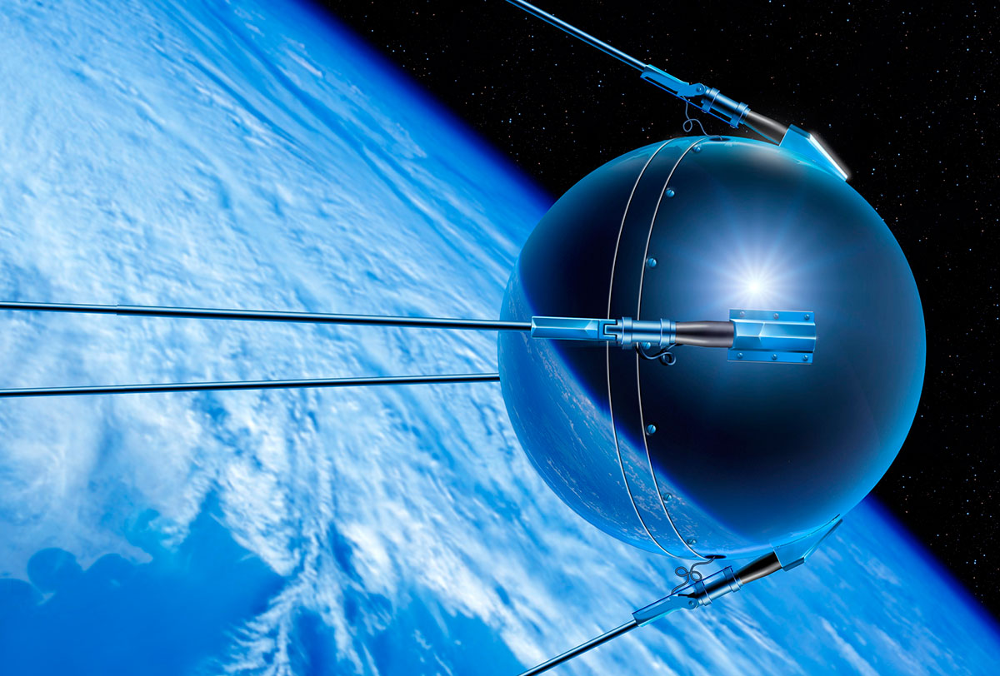

Sputnik 1
Sputnik 1, primul satelit artificial al Pământului, a fost lansat de Uniunea Sovietică la 4 octombrie 1957. Această misiune a reprezentat un moment istoric cu implicații majore asupra tehnologiei spațiale și a relațiilor internaționale. Prin lansarea Sputnik 1, Uniunea Sovietică a devenit prima țară care a plasat cu succes un obiect pe orbita Pământului, marcând începutul erei spațiale.
Caracteristici ale Sputnik 1
1. Dimensiuni și Construcție
- Dimensiuni: Sputnik 1 avea un diametru de aproximativ 58 cm.
- Greutate: A cântărit în jur de 83,6 kilograme.
- Construcție: Configurat sub forma unei sfere metalice simple, dispunea de patru antene lungi și subțiri.
2. Sistem de Energie și Comunicații
- Sursă de Energie: Funcționa pe baza bateriilor chimice.
- Comunicații: Era echipat cu transmițătoare radio care emiteau semnale în benzile de unde scurte și lungi.
3. Orbită și Durată de Funcționare
- Orbită: Sputnik 1 se deplasa pe o orbită eliptică, cu altitudinea variind între 215 km și 939 km față de suprafața Pământului.
- Durată de Funcționare: A funcționat și a transmis semnale radio timp de aproximativ 21 de zile, până când bateriile au fost epuizate.
Impactul Misiunii
1. Context Istoric
- Războiul Rece: În timpul Războiului Rece, Sputnik 1 a devenit un simbol al superiorității tehnologice și a provocat o reacție puternică în Statele Unite și în întreaga lume, accelerând competiția spațială.
2. Realizări Tehnice
- Primul Satelit: Sputnik 1 a fost primul obiect artificial care a fost plasat cu succes pe orbita Pământului, stabilind astfel un precedent în explorarea spațială.
3. Dezvoltări Ulterioare
- Cursa Spațială: Lansarea Sputnik 1 a stimulat dezvoltarea ulterioară a tehnologiilor spațiale și a dus la alte realizări remarcabile, inclusiv la primul zbor al unui om în spațiu.
Concluzii
Sputnik 1 rămâne un punct de cotitură semnificativ în istoria spațiului extraterestru. Această mică sferă metalică a deschis calea pentru explorarea spațială umană și a influențat dezvoltarea tehnologică și geopolitică. Impactul său asupra Războiului Rece și a relațiilor internaționale a fost semnificativ, iar succesele care au urmat au transformat Sputnik 1 într-un simbol al pionieratului spațial. Astfel, Sputnik 1 rămâne una dintre cele mai importante realizări ale istoriei spațiale.